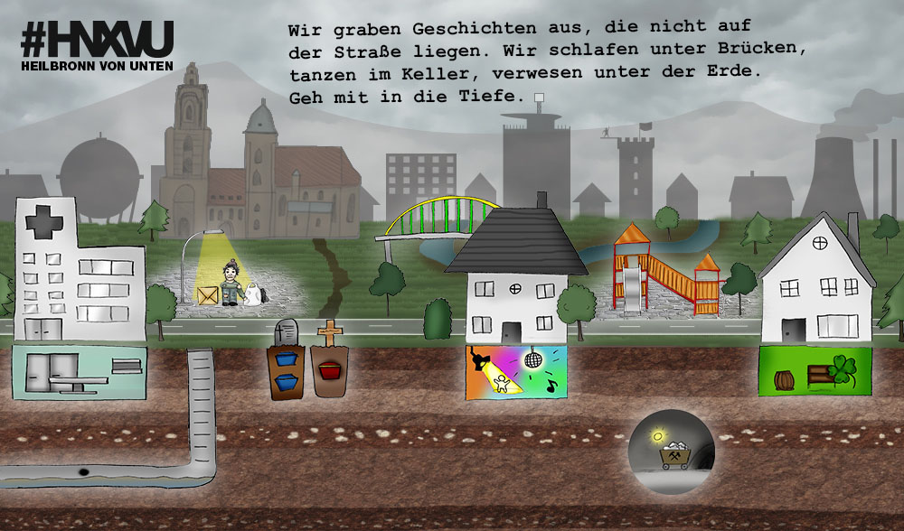

Erlebe Heilbronn mit Kinderaugen.
Fünf junge Nachwuchsjournalisten zeigen unter anderem, wie es ist, ständig Hinterteile im Gesicht zu haben.
Frank ist obdachlos.
Alles was er für das Leben unter der Brücke hat, passt in zwei Tüten.
Sein ganzer Stolz: ein Handy. Damit kann er Musik hören und alles um sich herum vergessen.
Unter den Brücken und in den Tunnels ...
Text ...
Totenstille, Fäulnisgeruch, Gänsehaut.
Ein Mann alleine mit einer aufgeschlitzten Leiche.
Die Pathologie, ein Ort des Grauens? Traut euch - wir zeigen euch, was dort unten tatsächlich passiert.
Wissen wir eigentlich, was unter der Erde mit unserem Körper passiert? Mit gefräßigen Würmern hat es wenig zu tun.
Wer wirklich mehr erfahren will: Unsere interaktive Grafik zeigt interessante Facts.
Mädels und Jungs lernten sich in den 1960er und 70er-Jahren in Heilbronn im Untergrund kennen.
Unter Heilbronn gibt es ein Netz, so lang wie das Straßennetz. Die Kanalisation ...
Wenn man wissen will, wie es unter der Erde aussieht, muss man ins Salzbergwerk gehen.
Wir waren da, wo normale Besucher nicht hinkommen: am absolut tiefsten Punkt unter Heilbronn.
Heilbronn von unten ist ein Projekt der Volontäre der Heilbronner Stimme.
HEILBRONNER STIMME GmbH & Co. KG